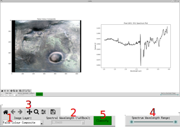

How To Use the Desktop Application
Selecting CRISM_ML Data
When you run CAML, the first thing you will be prompted for is the directory containing the CRISM_ML training dataset. This must be a folder, containing the CRISM_bland_unratioed.mat file for training the bland pixel classifier from Plebani et al. 2022 (Github Link). This dataset can be found here.
Warning
CAML cannot load CRISM imagery without this dataset. The dataset must be named CRISM_bland_unratioed.mat
Loading a CRISM Image
CAML is designed to work solely with CRISM L sensor TRDR images with TRR3 processing. Standard photometric and atmospheric corrections, including the "Volcano-Scan" atmospheric correction, are also expected to have been applied before loading the image into CAML. There are two methods for acquiring this data:
- Downloading the data from the PDS Geosciences Node, and then applying the corrections using the CRISM Analysis Toolkit (CAT) with ENVI software.
- Using MarsSI to source CRISM images with the desired corrections already applied. The data products from MarsSI with the
_CAT_corr.imgsuffix are the ones to use. NB: The suffix must be removed to load the image into CAML.
The directory containing the .img file must also contain the .lbl file of the image. The loading process may take up to a few minutes.
Basic Visualisation Controls
After loading a CRISM image, you will be presented with the image alongside a plot of individual spectra. You can pan and zoom on the image plot using the controls underneath it (3). Hovering over a pixel will display the spectrum for that pixel in the plot. Left clicking on a pixel will keep that pixel displayed until you left click again.

The following controls are available:
- Image Selection (1): Choose between visualising a ratioed image band, or a summary product (e.g. LCPINDEX2) created from the ratioed image.
- Image Channel Selection (2): If visualising an image band, select which band to display.
- Spectrum wavelength range (4): Choose the range of wavelengths to display in the spectrum plot.
- Classification (5): Button to run classification across the image using the CAML model. This will take a few minutes to complete.
Tip
For identification of most hydrated mineral features, plotting between 1.0 and 2.6 microns is recommended.
Classification
After pressing the classification button, the CAML model will conduct pixel-wise classification across the image. This should be possible with almost any level of hardware1, as the model is relatively small. The classification process may take a few minutes to complete, depending on the size of the image and the hardware being used.
Advanced Visualisation Controls (Post-Classification)
After classification has been completed, the predicted mineralogy will be displayed on top of the image.

The following additional controls will become available:
- Classification Results (On/Off) (1): Toggle the mineralogy overlay on the image.
- Two filtering options:
- Minimum Confidence (2): Minimum confidence level to display prediction averaged across the connected component2.
- Connected Components (3): Minimum number of pixels of the same mineralogy in a contiguous region to display.
- Run Filtering (4): This will apply the chosen filtering options (together) to the classification results.
- Spectral Reconstruction (On/Off) (5): Toggle the spectral reconstruction overlay on the image.
- Save Image (6): Save the image with the current mineralogy overlay and filtering applied.
Spectral Reconstructions
One output produced by the CAML model are the spectral reconstructions for the first 248 bands of each pixel. These are often less noisy than the original spectra, and allow for easier manual verification of mineral predictions. The spectral reconstructions can be toggled on and off using the Spectral Reconstruction button.
Warning
The spectral reconstructions are not the same as the original spectra, and should not be used for quantitative analysis. They are only intended to help with manual verification of mineral predictions. Absorption feature centres and depths may be shifted from the original spectra.
Saving Results
Saving Graphics
The image plot currently displayed can be saved as a .png file by using the icon underneath the image plot. This will save the image with the current mineralogy overlay and any filtering applied.
Saving CRISM Image
The CRISM image can be written out to an .img file using the Save Image button. This will save the original image to a new directory, with the mineral predictions as band 437, and the confidence levels as band 438. The current mineralogy overlay displayed are the predictions that will be saved, with all other pixels labelled as no data (65535 for CRISM data)3.
To allow for ENVI + CAT compatability (for map projection and further analysis), the image must be saved using the exact name of the original image file. Therefore please pick a new directory to save the image to, and ensure the original image file is not in that directory. The header (.hdr) and label (.lbl) files will also be saved.
-
Minimum 8GB RAM recommended. Currrently no GPU support. ↩
-
There are several ways these two filtering steps could be combined, we found this to give the most visually sensible results. ↩
-
This allows for easy visualisation in GIS software, without having to compute additional filtering. If you wish to have access to all of the predictions and filter in GIS, set the minimum confidence to 0.0 and the connected components to 0 before saving. ↩